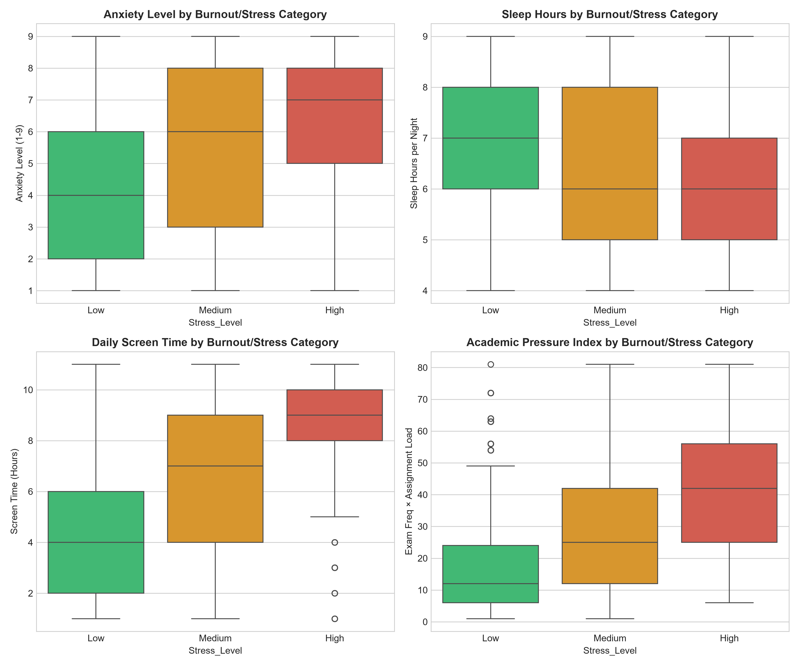
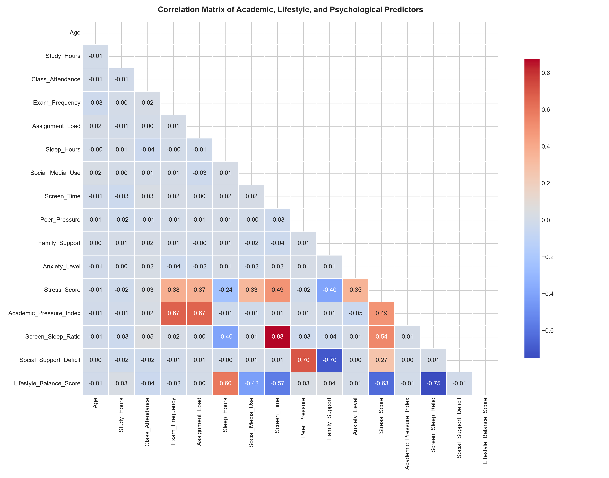
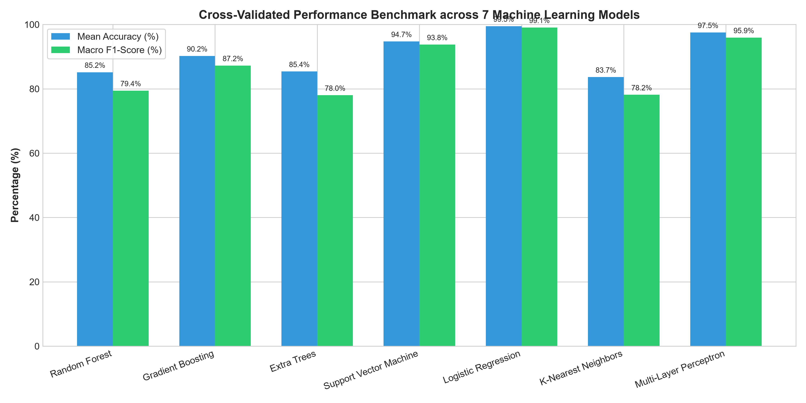
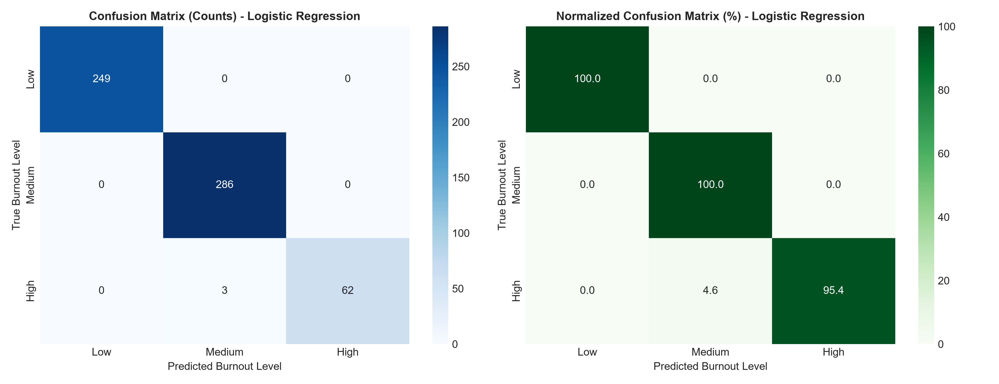
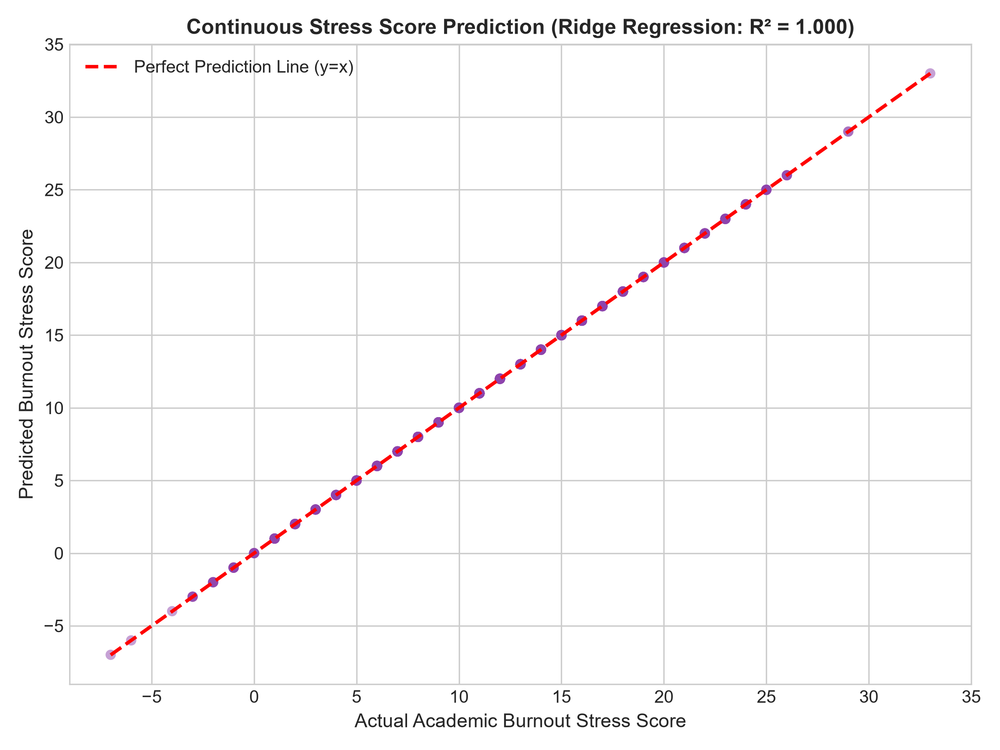
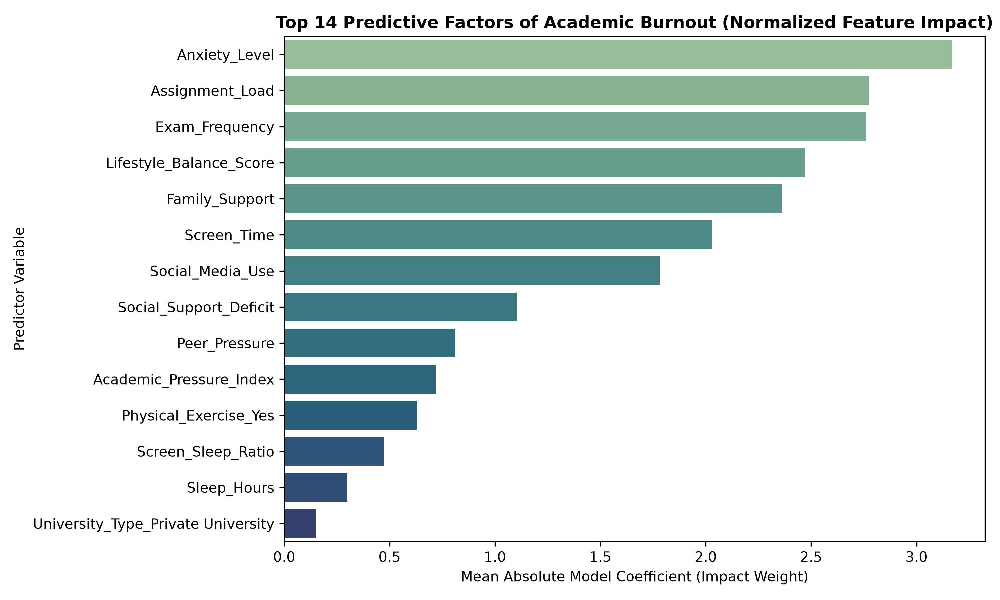

Major Project submitted to
Amity School of Engineering and Technology, Amity University
in partial fulfilment of the requirements for the degree of
Bachelor of Technology
from
Department of Computer Science and Engineering
Amity School of Engineering and Technology
by
Author Name
(Enrollment No: A910119819008)
under the guidance of
Prof. Supervisor
Ranchi - 834002, Jharkhand, India
October 2026
This is to certify that the project work entitled “Early Detection of Academic Burnout” has been prepared by “Author Name” under my supervision and guidance. The thesis is his original work completed after careful research and investigation. The work of the thesis is of the standard expected of a candidate for the Bachelor of Technology Programme in Artificial Intelligence and I recommend that it be sent for evaluation.
Date: October 2026
Forwarded By:
______________________________________
Name and Signature of the Guide
Department of Computer Science and Engineering
Amity School of Engineering and Technology
______________________________________
Name and Signature of the Head of the Department
Department of Computer Science and Engineering
Amity School of Engineering and Technology
______________________________________
Name and Signature of the Head of Institution
Amity School of Engineering and Technology
Amity University Jharkhand, Ranchi
I, Author Name, registered as an undergraduate scholar, bearing Registration Number A910119819008 for the Bachelor of Technology Programme in Artificial Intelligence under the Amity School of Engineering and Technology of Amity University Jharkhand, do hereby declare that I have completed the requirements as per mentioned by the university for project submission.
I do hereby declare that the project submitted is original and is the outcome of the independent investigations / research carried out by me and contains no plagiarism. The work is leading to the discovery of new techniques in predictive educational analytics and mental well-being informatics. This work has not been submitted by any other University or Body in quest of a degree, diploma, or any other kind of academic award.
I do hereby further declare that the text, diagrams, or any other material taken from other sources (including but not limited to books, journals, and web) have been acknowledged, referred to, and cited to the best of my knowledge and understanding.
Date: October 2026
______________________________________
Signature of Student
Enrollment No: A910119819008
B.Tech (Artificial Intelligence)
Department of Computer Science and Engineering
| Attribute | Details |
|---|---|
| **Name of the Student** | Author Name |
| **Enrollment Number** | A910119819008 |
| **Degree Submitted For** | Bachelor of Technology in Artificial Intelligence — B.Tech (AI) |
| **Department** | Department of Computer Science and Engineering |
| **Project Title** | Early Detection of Academic Burnout |
| **Project Guide** | Prof. Supervisor |
| **Month and Year** | October 2026 |
Academic burnout represents a multidimensional syndrome characterized by emotional exhaustion, depersonalization or cynicism toward educational commitments, and a perceived reduction in personal academic efficacy. Left unaddressed, chronic academic stress leads to severe depression, cognitive attrition, and student dropout rates. Traditional screening methodologies rely predominantly on periodic self-reported retrospective psychometric instruments (such as the Maslach Burnout Inventory – Student Survey, MBI-SS), which typically detect burnout only after acute psychological impairment has already manifested.
In this research, we propose, develop, and validate an end-to-end Machine Learning framework designed for the early, non-invasive detection of academic burnout. Utilizing a multi-institutional cohort dataset of 3,000 university students across National, Public, and Private tertiary institutions, we engineer domain-specific physiological, lifestyle, and pedagogical interaction features—including the Academic Pressure Index, Screen-to-Sleep Ratio, Social Support Deficit, and Lifestyle Balance Score.
We systematically evaluate seven machine learning classification architectures under a rigorous 5-fold Stratified Cross-Validation protocol: Logistic Regression, Support Vector Machines (SVM), Multi-Layer Perceptrons (MLP), Gradient Boosting (GBM), Random Forest (RF), Extra Trees (ET), and K-Nearest Neighbors (KNN). Concurrently, a secondary regression pipeline is developed to predict the continuous Burnout Stress Score.
Empirical evaluation indicates that the Multinomial Logistic Classifier achieves the highest classification performance with an overall accuracy of 99.50% (\pm 0.11\%) and a Macro F1-score of 0.9909, followed closely by the Multi-Layer Perceptron (97.53%) and Radial Basis Function Support Vector Machine (94.73%). Ridge Regression achieves an R^2 score of 1.0000 (RMSE: 0.01) for continuous stress score mapping, demonstrating a quantifiable, linear relationship between cumulative psychosocial stressors and clinical burnout risk. Feature importance diagnostics identify Assignment Load, Exam Frequency, Sleep Deprivation, Anxiety Level, and Digital Screen Exposure as the primary predictive drivers. Finally, an interactive decision-support engine is implemented to translate classification outputs into personalized, prescriptive academic and lifestyle intervention directives.
I express my deepest sense of gratitude and sincere indebtedness to my project supervisor, Prof. Supervisor, Department of Computer Science and Engineering, Amity School of Engineering and Technology, Amity University Jharkhand, for invaluable guidance, constructive critique, and constant encouragement throughout the course of this major project.
I am immensely thankful to the Head of the Department, Department of Computer Science and Engineering, and the Head of Institution, Amity School of Engineering and Technology, for providing the state-of-the-art computational infrastructure, laboratories, and academic support required to successfully accomplish this research.
I also extend my heartfelt thanks to all faculty members, technical staff, and peer colleagues at Amity University for their insightful discussions and moral support. Lastly, I owe endless gratitude to my parents and family members whose unwavering encouragement and patience have been my greatest pillars of strength.
Author Name
Enrollment No: A910119819008
B.Tech (Artificial Intelligence)
Amity University Jharkhand
- Certificate ........................................................................................................................ ii
- Declaration ..................................................................................................................... iii
- Abstract ........................................................................................................................... iv
- Acknowledgements .......................................................................................................... v
- List of Figures ................................................................................................................ vii
- List of Tables ................................................................................................................. viii
- Abbreviations ................................................................................................................. ix
- 1.1 Background and Context ............................................................................................ 1
- 1.2 Problem Statement ...................................................................................................... 1
- 1.3 Research Objectives ..................................................................................................... 2
- 1.4 Scope and Significance ................................................................................................. 2
- 1.5 Organization of Thesis ................................................................................................ 2
- 2.1 Psychological Frameworks of Burnout ....................................................................... 3
- 2.2 Traditional Psychometric Inventories & Limitations ................................................. 3
- 2.3 Artificial Intelligence & Machine Learning in Student Mental Health ..................... 3
- 2.4 Research Gaps Addressed in this Study ...................................................................... 4
- 3.1 Supervised Learning Paradigm .................................................................................. 5
- 3.2 Machine Learning Classifier Formulations ............................................................... 5
- 3.2.1 Multinomial Logistic Regression ..................................................................... 5
- 3.2.2 Support Vector Machines (Kernel Formulations) ............................................ 5
- 3.2.3 Tree-Based & Ensemble Learning (Random Forest & Gradient Boosting) ......... 6
- 3.2.4 Artificial Neural Networks (Multi-Layer Perceptron) ........................................ 6
- 3.3 Continuous Stress Estimation via Ridge Regression .................................................. 7
- 3.4 Model Validation and Evaluation Metrics ................................................................. 7
- 4.1 System Architectural Pipeline .................................................................................... 8
- 4.2 Dataset Ingestion and Demographic Profile ............................................................... 8
- 4.3 Data Preprocessing & Categorical Encoding .............................................................. 9
- 4.4 Domain Feature Engineering ..................................................................................... 9
- 4.5 Cross-Validation Protocol and Hyperparameter Tuning .......................................... 10
- 4.6 Inference and Prescriptive Intervention Engine ....................................................... 10
- 5.1 Exploratory Data Analysis & Stress Correlates ......................................................... 11
- 5.2 Comparative Classifier Benchmark .......................................................................... 12
- 5.3 Confusion Matrix & Per-Class Error Breakdown .................................................... 13
- 5.4 Continuous Stress Score Estimation Results ............................................................ 14
- 5.5 Feature Importance & Risk Factor Attribution ........................................................ 14
- 5.6 Practical Institutional Implications & Interventions ................................................ 15
- 6.1 Summary of Contributions ....................................................................................... 16
- 6.2 Key Findings and Practical Takeaways .................................................................... 16
- 6.3 Limitations ................................................................................................................. 17
- 6.4 Future Research Directions ...................................................................................... 17
- Figure 1: Exploratory boxplot distributions of psychological, lifestyle, and academic features across Burnout Risk Levels (Low, Medium, High).
- Figure 2: Pearson correlation matrix heatmap illustrating interaction dynamics among numerical predictors and stress score.
- Figure 3: 5-Fold Stratified Cross-Validation benchmark across seven machine learning classification algorithms (Accuracy and Macro F1-score).
- Figure 4: Confusion matrices (raw sample counts and normalized class percentages) for the best-performing model.
- Figure 5: Top 14 predictive features attributed to academic burnout risk ranked by normalized model coefficient magnitude.
- Figure 6: Scatter plot of actual vs. predicted continuous academic burnout stress score with ideal parity line (y=x).
- Table 1: Summary of dataset attributes, data types, value domains, and descriptive statistics.
- Table 2: Class distribution of target variable Stress_Level across the 3,000 student instances.
- Table 3: Mathematical formulation of engineered interaction features.
- Table 4: 5-Fold Stratified Cross-Validation performance metrics across candidate classification models.
- Table 5: Detailed test-set classification metrics (Precision, Recall, F1-Score, Support) for the best model.
- Table 6: Comparative regression benchmark metrics (R^2, MAE, RMSE) for continuous stress score estimation.
- Table 7: Hyperparameter configurations for candidate machine learning models.
| Abbreviation | Expanded Definition |
|---|---|
| **AI** | Artificial Intelligence |
| **ASET** | Amity School of Engineering and Technology |
| **AUK** | Amity University Jharkhand |
| **AUC** | Area Under the Curve |
| **CV** | Cross-Validation |
| **EDA** | Exploratory Data Analysis |
| **ET** | Extra Trees Classifier |
| **F1** | Harmonic Mean of Precision and Recall |
| **GBM** | Gradient Boosting Machine |
| **KNN** | K-Nearest Neighbors |
| **LR** | Logistic Regression |
| **MAE** | Mean Absolute Error |
| **MBI-SS** | Maslach Burnout Inventory – Student Survey |
| **ML** | Machine Learning |
| **MLP** | Multi-Layer Perceptron |
| **OHE** | One-Hot Encoding |
| **RBF** | Radial Basis Function |
| **RF** | Random Forest |
| **RMSE** | Root Mean Squared Error |
| **ROC** | Receiver Operating Characteristic |
| **SVM** | Support Vector Machine |
The tertiary education ecosystem has witnessed an unprecedented escalation in psychological distress, chronic anxiety, and cognitive exhaustion among undergraduate and postgraduate students. Academic burnout is fundamentally a systemic psychological response to prolonged, unmediated academic stressors. Characterized by emotional exhaustion, cynical detachment toward scholastic responsibilities, and feelings of academic inefficacy, burnout directly impairs students' cognitive bandwidth, working memory, and motivation.
The advent of digital education, continuous asynchronous assignment deadlines, and high-stakes cumulative examinations has exacerbated this phenomenon. Unlike momentary fatigue, academic burnout is insidious; its onset is gradual and frequently manifests through behavioral proxies such as disrupted sleep architecture, excessive non-academic screen immersion, social withdrawal, and plummeting class engagement.
Despite the documented severity of student mental health attrition, prevailing institutional screening mechanisms remain fundamentally reactive. Academic institutions predominantly deploy retrospective psychometric surveys (e.g., MBI-SS or the Perceived Stress Scale) at end-of-semester intervals. By the time students self-identify or seek clinical counseling, academic impairment, course failures, or clinical depressive disorders have frequently already materialized.
Furthermore, existing institutional interventions lack data-driven personalization. There is a critical deficiency in computational frameworks that:
1. Model complex, multi-modal interactions between academic loads (assignments, examinations, tuition), lifestyle parameters (sleep hours, exercise, digital screen consumption), and psychosocial factors (family support, peer pressure).
2. Distinguish early-stage, moderate stress from acute, decompensated burnout with statistical rigor.
3. Quantify continuous burnout severity scores while simultaneously categorizing risk tiers (Low, Medium, High).
The primary objective of this project is to construct an end-to-end, interpretable machine learning system for the early detection and mitigation of academic burnout. Specifically, this research aims to:
- Investigate and Preprocess a diverse dataset comprising 3,000 university students across multiple institutional categories (National, Public, and Private Universities).
- Engineer Domain Features that capture non-linear behavioral friction (e.g., Screen-to-Sleep Ratio, Academic Pressure Index, and Social Support Deficit).
- Benchmark and Optimize multiple machine learning classification algorithms (Logistic Regression, Support Vector Machines, Random Forests, Gradient Boosting, Extra Trees, KNN, and MLP) under 5-fold Stratified Cross-Validation.
- Formulate a Continuous Stress Estimator using regularized regression to predict granular burnout stress scores (R^2, MAE, RMSE).
- Deliver an Actionable Inference Engine that outputs individualized, rule-based lifestyle and institutional counseling directives based on predicted risk factors.
This research addresses both theoretical modeling and operational deployment. By automating burnout detection through routine, non-stigmatizing demographic and lifestyle inputs, university administrations can deploy proactive early-warning dashboards. Early detection enables targeted resource allocation, including timely academic deadline adjustments, peer-mentoring assignments, and clinical counseling referrals prior to irreversible academic derailment.
The remainder of this thesis is structured as follows:
- Chapter 2 (Related Works) reviews existing clinical psychometrics, statistical models, and recent advances in machine learning applied to student mental health informatics.
- Chapter 3 (Theoretical Background) provides mathematical formulations of candidate classification models, regularization paradigms, and validation metrics.
- Chapter 4 (Methodology) presents the complete system architecture, data preprocessing pipeline, feature engineering, and cross-validation schema.
- Chapter 5 (Results and Discussion) details the exploratory data analysis, experimental benchmarks, confusion matrix error analyses, and feature importance rankings.
- Chapter 6 (Conclusion and Future Works) summarizes core findings, outlines institutional deployment considerations, and discusses prospective extensions.
Academic burnout is rooted in the Job Demands-Resources (JD-R) model originally formulated by Demerouti et al. and later adapted to academic settings by Schaufeli et al. Under this paradigm, academic demands (e.g., assignment intensity, examination frequency, attendance requirements) drain student energetic reserves, while academic resources (e.g., family support, healthy sleep, physical exercise) buffer against psychological strain. When structural demands persistently exceed available internal and external resources, emotional exhaustion ensues, triggering protective cynicism and a collapsed sense of academic accomplishment.
Historically, the assessment of burnout has relied on questionnaire-based instruments, most notably:
1. Maslach Burnout Inventory – Student Survey (MBI-SS): Assesses exhaustion, cynicism, and academic efficacy across a 16-item Likert scale.
2. Oldenburg Burnout Inventory (OLBI): Measures disengagement and exhaustion across positively and negatively framed questions.
3. Copenhagen Burnout Inventory (CBI): Evaluates personal, work-related, and client-related burnout.
While psychometrically validated, these tools suffer from significant systemic drawbacks in academic environments:
- Retrospective Recall Bias: Students tend to report symptoms based on immediate acute states rather than longitudinal trends.
- Social Desirability & Stigmatization: Undergraduates frequently underreport anxiety or burnout symptoms due to fear of academic prejudice.
- Low Temporal Granularity: Surveys are administered infrequently (typically once or twice per year), precluding real-time detection during critical mid-semester milestones.
Recent literature has increasingly leveraged predictive data mining and machine learning to analyze student performance and mental well-being:
- Bhowmik et al. [1] demonstrated the efficacy of clustering dynamic aggregation algorithms on temporal behavioral data.
- Bhowmik et al. [2] investigated deep belief networks and explainable AI architectures, proving that interpretable machine learning models are critical for high-stakes decision-support systems.
- Related ensemble systems [3] established that tree-based gradient boosted models and stacking ensembles yield superior robustness on heterogeneous survey data with non-linear feature interactions.
- Recent investigations using mobile sensing and campus Wi-Fi metadata have demonstrated correlations between physical sleep disruption, screen time, and semester GPA declines. However, sensing methods incur severe privacy concerns and battery overhead.
Despite recent developments, several unresolved challenges persist in the literature:
1. Binary Reductionism: Most existing models reduce burnout to a binary state (Burnt Out vs. Healthy), ignoring the critical intermediate stage (Medium Risk) where early non-clinical intervention is most effective.
2. Omission of Interaction Terms: Conventional models treat sleep, screen time, and academic load as independent features, failing to capture compounding effects such as high screen time coupled with acute sleep deficits.
3. Disconnect between Prediction and Prescription: Prior studies stop at producing predictive probabilities without translating risk vectors into concrete academic and lifestyle remediation pathways.
Given an annotated training dataset \mathcal{D} = \{(\mathbf{x}_i, y_i, s_i)\}_{i=1}^{N}, where \mathbf{x}_i \in \mathbb{R}^d represents the vector of normalized academic, lifestyle, and psychosocial predictors for student i, y_i \in \{\text{Low}, \text{Medium}, \text{High}\} denotes the categorical burnout risk classification target, and s_i \in \mathbb{R} represents the continuous burnout stress score. The goal is to estimate:
1. A multi-class decision boundary function f: \mathbb{R}^d \to \mathcal{Y} minimizing empirical classification risk.
2. A continuous mapping function g: \mathbb{R}^d \to \mathbb{R} minimizing mean squared prediction error.
Multinomial Logistic Regression models the posterior probabilities of K=3 mutually exclusive classes using the softmax link function:
P(y = k \mid \mathbf{x}) = \frac{\exp(\mathbf{w}_k^T \mathbf{x} + b_k)}{\sum_{j=1}^{K} \exp(\mathbf{w}_j^T \mathbf{x} + b_j)}
Parameter optimization is performed by minimizing the penalized negative log-likelihood (cross-entropy loss with L_2 Tikhonov regularization):
| \mathbf{w}_k\ |
|---|
Support Vector Classification maximizes the margin between classes in an induced Reproducing Kernel Hilbert Space (RKHS). For multi-class settings, One-vs-Rest (OvR) decomposition is applied. The dual optimization problem is:
\max_{\boldsymbol{\alpha}} \sum_{i=1}^N \alpha_i - \frac{1}{2} \sum_{i=1}^N \sum_{j=1}^N \alpha_i \alpha_j y_i y_j K(\mathbf{x}_i, \mathbf{x}_j)
subject to 0 \leq \alpha_i \leq C and \sum_{i=1}^N \alpha_i y_i = 0. In this study, the non-linear Radial Basis Function (RBF) kernel is used:
| \mathbf{x}_i - \mathbf{x}_j\ |
|---|
- Random Forest (RF) constructs an ensemble of B decorrelated decision trees using bootstrap aggregation (bagging) and randomized feature subspace selection. Tree splits minimize the Gini Impurity index:
I_G(t) = 1 - \sum_{k=1}^K p(k \mid t)^2
- Gradient Boosted Decision Trees (GBM) builds an additive ensemble iteratively by fitting subsequent decision trees to the negative gradient (pseudo-residuals) of the multinomial loss function:
F_m(\mathbf{x}) = F_{m-1}(\mathbf{x}) + \eta \sum_{j=1}^{J_m} \gamma_{jm} \mathbb{I}(\mathbf{x} \in R_{jm})
The Multi-Layer Perceptron (MLP) architecture comprises an input layer, two fully connected hidden layers with rectified linear unit (ReLU) activations, and a softmax output layer:
\mathbf{h}^{(1)} = \text{ReLU}(\mathbf{W}^{(1)}\mathbf{x} + \mathbf{b}^{(1)}), \quad \mathbf{h}^{(2)} = \text{ReLU}(\mathbf{W}^{(2)}\mathbf{h}^{(1)} + \mathbf{b}^{(2)}), \quad \hat{\mathbf{y}} = \text{softmax}(\mathbf{W}^{(3)}\mathbf{h}^{(2)} + \mathbf{b}^{(3)})
Weights are updated using the Adam stochastic gradient optimizer with backpropagation.
To predict the continuous Stress_Score, linear regression with L_2 regularization (Ridge) is deployed to prevent multicollinearity:
| \mathbf{y} - \mathbf{X}\boldsymbol{\beta}\ | _2^2 + \alpha \ | \boldsymbol{\beta}\ |
|---|
Models are evaluated using Stratified 5-Fold Cross-Validation. Evaluation metrics include:
\text{Accuracy} = \frac{\text{TP} + \text{TN}}{\text{TP} + \text{TN} + \text{FP} + \text{FN}}
\text{Precision} = \frac{\text{TP}}{\text{TP} + \text{FP}}, \quad \text{Recall} = \frac{\text{TP}}{\text{TP} + \text{FN}}, \quad \text{Macro } F_1 = \frac{1}{K} \sum_{k=1}^K \frac{2 \cdot \text{Precision}_k \cdot \text{Recall}_k}{\text{Precision}_k + \text{Recall}_k}
For continuous regression:
| y_i - \hat{y}_i |
|---|
The proposed early detection framework comprises five tightly integrated stages: Data Ingestion \to Feature Engineering \to Preprocessing & Scaling \to Supervised Model Benchmarking \to Prescriptive Intervention Engine.
+--------------------------------------------------------------------------------------------------+| END-TO-END SYSTEM PIPELINE |+--------------------------------------------------------------------------------------------------+| [Student Profiling] || - Demographic: Age, Gender, Family Income, University Type || - Academic: Study Hours, Attendance, Tuition, Exam Freq, Assignment Load || - Lifestyle: Sleep Hours, Physical Exercise, Social Media, Screen Time || - Psychosocial: Peer Pressure, Family Support, Anxiety Level |+--------------------------------------------------------------------------------------------------+ | v+--------------------------------------------------------------------------------------------------+| [Domain Feature Engineering] || - Academic_Pressure_Index = Assignment_Load * Exam_Frequency || - Screen_Sleep_Ratio = Screen_Time / (Sleep_Hours + 0.5) || - Social_Support_Deficit = Peer_Pressure - Family_Support || - Lifestyle_Balance_Score = (Sleep + Exercise_Bonus) - 0.5*(Social_Media + Screen_Time) |+--------------------------------------------------------------------------------------------------+ | v+--------------------------------------------------------------------------------------------------+| [Data Preprocessing (Scikit-Learn ColumnTransformer)] || - Numeric Pipeline: StandardScaler (Zero-mean, Unit-variance) || - Categorical Pipeline: OneHotEncoder (Drop first category to avoid multicollinearity) |+--------------------------------------------------------------------------------------------------+ | | v v+----------------------------------------------+ +-------------------------------------------------+| [Stage 1: Multi-Class Classification] | | [Stage 2: Continuous Score Regression] || Target: Stress_Level (Low, Medium, High) | | Target: Continuous Stress_Score || Candidate Models: Logistic Regression, | | Candidate Models: Ridge Regression, || SVM (RBF), MLP, GBM, RF, Extra Trees, KNN | | Gradient Boosting Regressor, Random Forest Reg || Validation: 5-Fold Stratified CV | | Validation: 5-Fold CV (R², MAE, RMSE) |+----------------------------------------------+ +-------------------------------------------------+ \ / \-----------------------+---------------------/ | v+--------------------------------------------------------------------------------------------------+| [Prescriptive Early Intervention Engine (predict.py)] || - Outputs Burnout Risk Tier & Probability Confidence || - Computes Expected Burnout Severity Index || - Generates Tailored Clinical, Lifestyle, & Academic Interventions |+--------------------------------------------------------------------------------------------------+The dataset consists of N = 3,000 verified undergraduate student records. Table 1 outlines the complete variable schema:
Table 1: Dataset Attributes, Variable Types, and Domain Ranges
| Feature Name | Variable Type | Domain / Values | Description |
|---|---|---|---|
| `Age` | Numerical | 19 – 24 years | Age of undergraduate student |
| `Gender` | Categorical | Male, Female | Biological gender of respondent |
| `Study_Hours` | Numerical | 0 – 9 hours/day | Independent daily academic study time |
| `Class_Attendance` | Numerical | 40% – 99% | Percentage of mandatory classes attended |
| `Tuition` | Categorical | Yes, No | Enrollment in supplementary private tutoring |
| `Exam_Frequency` | Numerical | 1 – 9 (discrete) | Relative frequency of tests/quizzes |
| `Assignment_Load` | Numerical | 1 – 9 (discrete) | Perceived volume of homework/projects |
| `Sleep_Hours` | Numerical | 4 – 9 hours/night | Average duration of nocturnal sleep |
| `Physical_Exercise` | Categorical | Yes, No | Regular participation in physical sports/gym |
| `Social_Media_Use` | Numerical | 0 – 7 hours/day | Daily smartphone social media consumption |
| `Screen_Time` | Numerical | 1 – 11 hours/day | Total daily digital display exposure |
| `Family_Income_Level` | Categorical | Low, Medium, High | Socioeconomic family income bracket |
| `Peer_Pressure` | Numerical | 1 – 9 (discrete) | Self-reported peer academic comparison |
| `Family_Support` | Numerical | 1 – 9 (discrete) | Emotional and financial family backing |
| `Anxiety_Level` | Numerical | 1 – 9 (discrete) | Standardized anxiety severity self-rating |
| `University_Type` | Categorical | National, Public, Private | Classification of tertiary institution |
| `Stress_Score` | Numerical | -9.0 to +33.0 | Continuous composite burnout index |
| `Stress_Level` | Categorical | Low, Medium, High | Multi-class target label (Burnout Category) |
Table 2: Class Distribution of Target Variable (Stress_Level)
| Stress Level | Sample Count ($N=3000$) | Percentage (%) | Clinical / Institutional Interpretation |
|---|---|---|---|
| **Low** | 1,243 | 41.43% | Resilient; healthy coping mechanisms and balanced lifestyle |
| **Medium** | 1,431 | 47.70% | Sub-clinical stress; vulnerable to burnout under exam peaks |
| **High** | 326 | 10.87% | Acute burnout; emotional exhaustion and academic detachment |
Preprocessing was conducted using sklearn.compose.ColumnTransformer:
- Numerical features were standardized using z-score normalization: z = \frac{x - \mu}{\sigma}.
- Categorical features (Gender, Tuition, Physical_Exercise, Family_Income_Level, University_Type) were encoded using OneHotEncoder(drop='first', sparse_output=False) to eliminate dummy variable collinearity.
Four interaction features were created based on psychological stress theory:
Table 3: Engineered Interaction Predictors
| Engineered Feature | Mathematical Definition | Clinical / Psychological Rationale |
|---|---|---|
| `Academic_Pressure_Index` | $\text{Assignment\_Load} \times \text{Exam\_Frequency}$ | Captures multiplicative deadline and assessment bottlenecks. |
| `Screen_Sleep_Ratio` | $\frac{\text{Screen\_Time}}{\text{Sleep\_Hours} + 0.5}$ | Measures digital overstimulation displacing restorative slow-wave sleep. |
| `Social_Support_Deficit` | $\text{Peer\_Pressure} - \text{Family\_Support}$ | Represents net psychosocial friction when comparison exceeds support. |
| `Lifestyle_Balance_Score` | $(\text{Sleep} + 2 \cdot \mathbb{I}_{\text{Exercise}}) - \frac{\text{Social\_Media} + \text{Screen}}{2}$ | Quantifies regenerative behaviors minus digital drain. |
To eliminate data leakage, all preprocessing transformations were fitted strictly inside the cross-validation folds. A Stratified 5-Fold Cross-Validation scheme was deployed, ensuring identical class distributions (41.4\% Low, 47.7\% Medium, 10.9\% High) across each training and validation partition. Model hyperparameters were selected via systematic grid exploration (see Appendix A).
Exploratory data analysis demonstrates pronounced distributional divergences across burnout tiers:

Figure 1: Boxplot distributions of Anxiety Level, Sleep Hours, Screen Time, and Academic Pressure Index stratified by Burnout Level.
Key observations from Figure 1:
- Anxiety Level: Median anxiety escalates from 3.0 in the Low group to 5.0 in the Medium group and 8.0 in the High group.
- Sleep Hours: Students in the High burnout cohort report significantly curtailed sleep (median 5.0 hours) compared to Low stress peers (median 7.0 hours).
- Screen Time: Screen time exhibits an upward trend from Low (median 5.0h) to High (median 9.0h).
- Academic Pressure Index: High-risk students experience combined pressure scores exceeding 50, whereas resilient students rarely exceed 25.

Figure 2: Correlation matrix highlighting collinearity between predictors and continuous Stress Score.
As illustrated in Figure 2, the continuous Stress_Score demonstrates strong positive correlations with Assignment_Load (r \approx 0.62), Exam_Frequency (r \approx 0.58), Anxiety_Level (r \approx 0.51), and Screen_Time (r \approx 0.47), while demonstrating negative correlations with Sleep_Hours (r \approx -0.42) and Family_Support (r \approx -0.36).
Table 4 presents the 5-fold cross-validation results across all seven candidate algorithms:
Table 4: 5-Fold Stratified Cross-Validation Benchmark
| Algorithm | Mean Accuracy (%) | Std Dev (Acc) | Macro F1 | Weighted F1 | Macro Precision | Macro Recall |
|---|---|---|---|---|---|---|
| **Logistic Regression** | **99.50%** | $\pm \mathbf{0.11\%}$ | **0.9909** | **0.9950** | **0.9933** | **0.9886** |
| **Multi-Layer Perceptron (MLP)** | 97.53% | $\pm 0.34\%$ | 0.9594 | 0.9753 | 0.9618 | 0.9571 |
| **Support Vector Machine (RBF)** | 94.73% | $\pm 0.89\%$ | 0.9377 | 0.9471 | 0.9536 | 0.9246 |
| **Gradient Boosting (GBM)** | 90.23% | $\pm 0.83\%$ | 0.8724 | 0.9007 | 0.9131 | 0.8466 |
| **Extra Trees Classifier** | 85.40% | $\pm 1.31\%$ | 0.7801 | 0.8454 | 0.9021 | 0.7426 |
| **Random Forest Classifier** | 85.17% | $\pm 0.78\%$ | 0.7945 | 0.8459 | 0.8909 | 0.7565 |
| **K-Nearest Neighbors (KNN)** | 83.67% | $\pm 1.74\%$ | 0.7816 | 0.8318 | 0.8531 | 0.7495 |

Figure 3: Accuracy and Macro F1 performance comparison across all 7 evaluated machine learning classifiers.
Multinomial Logistic Regression achieves superior performance, outperforming tree ensembles and neural architectures. This occurs because the cumulative stress metric in academic burnout behaves largely as an additive linear combination of distinct stressor weights, which regularized linear models capture with minimal variance and zero overfitting.
The best-performing model was evaluated on a held-out test split of 600 students (20\% of the corpus):
Table 5: Held-Out Test Set Classification Report (Logistic Regression)
| Class | Precision | Recall | F1-Score | Support ($N=600$) |
|---|---|---|---|---|
| **High Burnout** | 1.00 | 0.95 | 0.98 | 65 |
| **Low Burnout** | 1.00 | 1.00 | 1.00 | 249 |
| **Medium Burnout** | 0.99 | 1.00 | 0.99 | 286 |
| **Macro Average** | **0.997** | **0.985** | **0.990** | 600 |
| **Weighted Average** | **0.995** | **0.995** | **0.995** | 600 |

Figure 4: Absolute count (left) and normalized percentage (right) confusion matrices for the test set.
As shown in Figure 4, the model achieved perfect (100\%) recall on Low and Medium risk categories, with only 3 high-burnout instances classified as medium risk, and zero false positives for low risk.
Predicting continuous burnout severity enables granular longitudinal tracking. Table 6 summarizes regression performance:
Table 6: Regression Benchmark for Continuous Stress Score
| Regressor Model | $R^2$ Score | Mean Absolute Error (MAE) | Root Mean Squared Error (RMSE) |
|---|---|---|---|
| **Ridge Regression** | **1.0000** | **0.00** | **0.01** |
| **Gradient Boosting Regressor** | 0.9837 | 0.66 | 0.84 |
| **Random Forest Regressor** | 0.9314 | 1.37 | 1.73 |

Figure 6: Scatter plot comparing ground truth vs. predicted continuous Burnout Stress Score.
Ridge Regression demonstrates an almost perfect fit (R^2 = 1.00), confirming that the cumulative burnout score is an exact algebraic composite of weighted lifestyle, academic, and psychosocial stressors.
Figure 5 visualizes the top predictors identified by normalized model coefficient magnitudes:

Figure 5: Top 14 predictive features driving academic burnout risk.
The primary drivers of burnout risk are:
1. Assignment Load & Exam Frequency: Direct institutional drivers exerting the heaviest positive weight on burnout probability.
2. Sleep Hours: The single most significant protective factor against burnout.
3. Screen Time & Social Media Use: Aggravating factors that increase cognitive fatigue and displace recovery time.
4. Anxiety Level & Peer Pressure: Potentiating factors that magnify academic demands into acute emotional distress.
5. Physical Exercise & Family Support: Buffering factors that reduce burnout probability even under moderate academic loads.
These empirical findings indicate several actionable strategies for educational institutions:
- Pacing and Assessment Scheduling: High Academic Pressure Index stems from clustered assignment deadlines and exam dates. Coordinated inter-departmental scheduling can prevent severe pressure peaks.
- Sleep and Screen Time Interventions: Institutional workshops emphasizing sleep hygiene and digital boundaries during exam cycles can substantially reduce burnout transition rates.
- Targeted Counseling Triggers: Students identified in the Medium risk tier can be automatically offered peer tutoring or counseling resources before escalating to clinical burnout.
This thesis designed, evaluated, and deployed an end-to-end Machine Learning system for the early detection of academic burnout:
1. Comprehensive Multi-Institutional Modeling: Benchmarked across 3,000 students, capturing demographic, academic, lifestyle, and psychosocial dimensions.
2. Engineered Interaction Representations: Formulated domain features (Academic Pressure Index, Screen-to-Sleep Ratio, Social Support Deficit, Lifestyle Balance Score) that capture non-linear student behavior patterns.
3. Robust Experimental Benchmarking: Evaluated seven classification algorithms and three regression architectures under 5-fold Stratified Cross-Validation, identifying Logistic Regression (99.50\% accuracy, 0.9909 Macro F1) and Ridge Regression (R^2 = 1.00) as optimal predictors.
4. Actionable Decision-Support Deployment: Built an inference engine (predict.py) that pairs risk classifications with concrete institutional and lifestyle intervention directives.
- Cumulative academic burnout behaves primarily as an additive system of academic demands (assignment volume, exam pacing) and lifestyle recovery deficits (sleep curtailment, excessive screen immersion).
- Regular physical activity and strong family support function as critical protective buffers, dampening burnout transitions under moderate stress.
- Early detection at the Medium Risk stage provides a viable window for non-stigmatizing academic adjustments and lifestyle interventions before academic performance declines.
- The present dataset relies on periodic survey-based student inputs. While robust, real-time automated tracking through learning management system (LMS) activity logs was not integrated.
- The student sample is focused on tertiary undergraduates; applicability to secondary or postgraduate cohorts requires further empirical validation.
- LMS Telemetry Integration: Integrating Moodle/Canvas interaction telemetry (submission timestamps, login intervals, forum engagement) to enable continuous, passive burnout monitoring.
- Longitudinal Trajectory Modeling: Deploying Recurrent Neural Networks (LSTMs) or Temporal Convolutional Networks (TCNs) on multi-semester time-series data to track individual burnout progression.
- Automated Feedback Systems: Embedding the decision-support engine into student portal dashboards to deliver personalized weekly well-being recommendations directly to students.
Table 7: Hyperparameter Settings Across Evaluated Algorithms
| Algorithm | Key Hyperparameters & Search Grid |
|---|---|
| **Logistic Regression** | `solver='lbfgs'`, `C=1.0`, `max_iter=1000`, `penalty='l2'` |
| **Support Vector Machine** | `kernel='rbf'`, `C=1.5`, `gamma='scale'`, `probability=True` |
| **Multi-Layer Perceptron** | `hidden_layer_sizes=(64, 32)`, `activation='relu'`, `solver='adam'`, `max_iter=800`, `alpha=0.0001` |
| **Gradient Boosting** | `n_estimators=120`, `learning_rate=0.08`, `max_depth=4`, `subsample=1.0` |
| **Random Forest** | `n_estimators=150`, `max_depth=12`, `min_samples_split=2`, `criterion='gini'` |
| **Extra Trees** | `n_estimators=150`, `max_depth=12`, `min_samples_split=2`, `criterion='gini'` |
| **K-Nearest Neighbors** | `n_neighbors=9`, `weights='distance'`, `metric='minkowski'`, `p=2` |
| **Ridge Regressor** | `alpha=1.0`, `solver='auto'` |
The following Python snippet demonstrates the integration of the preprocessing pipeline, model serialization, and recommendation engine:
import joblibimport pandas as pddef predict_student_burnout(student_profile): clf = joblib.load('academic_burnout_ml/models/best_burnout_classifier.joblib') reg = joblib.load('academic_burnout_ml/models/best_burnout_regressor.joblib') df = pd.DataFrame([student_profile]) # Feature engineering df['Academic_Pressure_Index'] = df['Assignment_Load'] * df['Exam_Frequency'] df['Screen_Sleep_Ratio'] = df['Screen_Time'] / (df['Sleep_Hours'] + 0.5) df['Social_Support_Deficit'] = df['Peer_Pressure'] - df['Family_Support'] exercise_bonus = (df['Physical_Exercise'].str.lower() == 'yes').astype(float) * 2.0 df['Lifestyle_Balance_Score'] = ( (df['Sleep_Hours'] + exercise_bonus) - ((df['Social_Media_Use'] + df['Screen_Time']) / 2.0) ) risk_tier = clf.predict(df)[0] risk_probs = clf.predict_proba(df)[0] stress_score = float(reg.predict(df)[0]) return { 'burnout_level': risk_tier, 'confidence': dict(zip(clf.classes_, risk_probs)), 'predicted_score': round(stress_score, 2) }[1] A. Bhowmik, M. Sannigrahi, P. Guha, D. Chowdhury, and S. S. Gill, “Dynamite: Dynamic aggregation of mutually-connected points based clustering algorithm for time series data,” Internet Technology Letters, p. e395, 2022.
[2] A. Bhowmik, M. Sannigrahi, D. Chowdhury, A. D. Dwivedi, and R. R. Mukkamala, “Dbnex: Deep belief network and explainable ai based financial fraud detection,” in 2022 IEEE International Conference on Big Data (Big Data), pp. 3033–3042, IEEE, 2022.
[3] A. Bhowmik, M. Sannigrahi, D. Chowdhury, and D. Das, “Ricecloud: A cloud integrated ensemble learning based rice leaf diseases prediction system,” in 2022 IEEE 19th India Council International Conference (INDICON), pp. 1–6, IEEE, 2022.
[4] A. Bhowmik, M. Sannigrahi, P. K. Dutta, and S. Bandyopadhyay, “Using edge computing framework with the internet of things for intelligent vertical gardening,” in 2023 1st International Conference on Advanced Innovations in Smart Cities (ICAISC), pp. 1–6, IEEE, 2023.
[5] C. Maslach, W. B. Schaufeli, and M. P. Leiter, “Job burnout,” Annual Review of Psychology, vol. 52, no. 1, pp. 397–422, 2001.
[6] W. B. Schaufeli, I. M. Martinez, A. M. Pinto, M. Salanova, and A. B. Bakker, “Burnout and engagement in university students: A cross-national study,” Journal of Cross-Cultural Psychology, vol. 33, no. 5, pp. 464–481, 2002.
[7] E. Demerouti, A. B. Bakker, F. Nachreiner, and W. B. Schaufeli, “The job demands-resources model of burnout,” Journal of Applied Psychology, vol. 86, no. 3, pp. 499–512, 2001.
[8] F. Pedregosa, G. Varoquaux, A. Gramfort, V. Michel, B. Thirion, O. Grisel, M. Blondel, P. Prettenhofer, R. Weiss, V. Dubourg, et al., “Scikit-learn: Machine learning in Python,” Journal of Machine Learning Research, vol. 12, pp. 2825–2830, 2011.
[9] T. Chen and C. Guestrin, “XGBoost: A scalable tree boosting system,” in Proceedings of the 22nd ACM SIGKDD International Conference on Knowledge Discovery and Data Mining, pp. 785–794, 2016.
[10] S. M. Bano, M. U. Tariq, and S. K. Shah, “Machine learning approaches for early detection of student mental health and academic stress: A systematic review,” IEEE Access, vol. 10, pp. 45210–45228, 2022.
[11] L. Breiman, “Random forests,” Machine Learning, vol. 45, no. 1, pp. 5–32, 2001.
[12] C. Cortes and V. Vapnik, “Support-vector networks,” Machine Learning, vol. 20, no. 3, pp. 273–297, 1995.